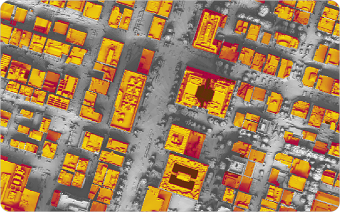

태양광 도입
경기도 전역의 태양광 잠재력, 설치정보와
설치 도입 시뮬레이션까지 한번에 확인하세요.
태양광은 재생에너지 중 가장 쉽게 도입할 수 있는 장점이 있습니다. 하지만 단순히 설비를 설치한다고 해서
높은 효율의 에너지를 얻을 수 있는 것이 아닙니다.
설치할 위치의 태양광 잠재량과 지형의 음영 등을 고려한 적지를 선정하는 것이 매우 중요합니다.
태양광 도입 서비스는 경기도 전역의 태양광 잠재량 정보와 설비 현황을 제공합니다. 또한
건물 또는 지형의 태양광 설비를 설치할 때 최적의 적지를 시뮬레이션을 통해 확인할 수 있습니다.
태양광 도입분석 시뮬레이션이란?
경기도 접경지역을 제외한 모든 지역을 대상으로 건물옥상과 지형필지에
대하여 태양광 설치 적지와 발전량, 예상수익 등을 정밀하게 분석하여
제공하는 서비스입니다.
건물옥상과 지형필지 적지 시뮬레이션
건물 또는 지형의 주변 환경 고층건물, 산악지형 등을 고려한 정밀
음영정보를 활용하여 태양광 설비위치와 면적을 정확하게 산출합니다.
최적의 적지위치와 패널 개수를 제공하고 사용자가 패널 개수를 쉽게 변경할 수
있도록 사용자 중심의 서비스를 제공합니다.
태양광 설치 편익비용 및 규제검토 정보 제공
태양광 최적의 패널 수 선정 및 변화에 따라 설치비용과 예상 발전량을 기반으로
편익분석을 제공합니다. 또한, 태양광 발전소 설치를 위한 각종 규제정보를 지도를
통해 동시에 확인할 수 있습니다.
태양광 도입분석 시뮬레이션 주요 프로세스
태양광 도입분석 시뮬레이션은 경기도에서 취득한 항공라이다 고정밀 데이터와 기상청의 일사량 데이터, 부동산원의 에너지데이터 등을 활용하였습니다. 이러한 기초자료를 활용하여 esri사의 일사량분석 솔루션을 적용하여 건축물옥상과 지형필지의 음영데이터를 제작하였습니다. 이러한 데이터를 기반으로 태양광 도입을 위한 설치분석 시뮬레이션을 구현하였습니다.
01 활용데이터
그린리모델링 분석 요청
- 항공라이다 데이터
- 일사량 데이터
- 건축물 에너지사용량
02 음영분석
ArcGIS® Solar Radiation
03 도입분석
시뮬레이션
- 태양광 설치 적지지역 분석
- 태양광 효율기반 시뮬레이션
- 최적 패널 수 분석
- 예측발전량 분석
- 발전사업 예상분석
- 태양광 설치 규제지역
태양광 도입분석 시뮬레이션 주요 프로세스
태양광 도입분석 시뮬레이션은 경기도에서 취득한 항공라이다 고정밀 데이터와 기상청의 일사량 데이터, 부동산원의 에너지데이터 등을 활용하였습니다. 이러한 기초자료를 활용하여 esri사의 일사량분석 솔루션을 적용하여 건축물옥상과 지형필지의 음영데이터를 제작하였습니다. 이러한 데이터를 기반으로 태양광 도입을 위한 설치분석 시뮬레이션을 구현하였습니다.
156만동 경기도 건물옥상에 대한 정밀 DSM기반 음영데이터 구축
접경지역을 제외한 경기도 전역의 156만여동의 건물을 대상으로 건물 또는 지형의 주변 환경 고층건물, 산악지형 등을 고려한 0.5m 격자의 정밀한 DSM 데이터를 활용하여 제작하였습니다. 단독주택, 아파트, 산업단지 건물, 공공시설 등 모든 건축 유형을 포함하여 건물 옥상에 대한 일조 및 음영 환경을 종합적으로 분석할 수 있는 데이터를 구축하였습니다.

지형필지 음영데이터
건물옥상의 경우 위치 주변 건물 또는 지형에 따라 일사량의 영향을 받습니다. 또한, 좁은 지역에 최대한의 태양광 발전시설을 설치하기 위해 고정밀의 음영데이터가 필요합니다. 하지만, 지형필지의 경우 DSM 정보를 활용할 경우 태양광 발전시설 설치시 반영하지 않는 가로수 등과 같은 시설의 영향으로 정확한 시뮬레이션이 불가능합니다. 따라서, 지형필지를 대상으로 한 태양광 도입분석을 위해 DEM과 건축물 3차원 모델을 융합한 건축물DEM을 구축하여 음영데이터를 구축하였습니다.

글로벌 솔루션을 이용한 음영데이터 구축
정밀한 DSM과 건물DEM을 기반으로 esri사의 ArcGIS Solar Radiation Tool 을 적용하여, 건축물 옥상과 지형필지에 대한 음영데이터를 구축하였습니다.
음영데이터는 연간 일사정보를 활용하여 제작하였습니다.
태양광 도입분석 시뮬레이션 주요 프로세스
태양광 도입분석 시뮬레이션은 경기도에서 취득한 항공라이다 고정밀 데이터와 기상청의 일사량 데이터, 부동산원의 에너지데이터 등을 활용하였습니다. 이러한 기초자료를 활용하여 esri사의 일사량분석 솔루션을 적용하여 건축물옥상과 지형필지의 음영데이터를 제작하였습니다. 이러한 데이터를 기반으로 태양광 도입을 위한 설치분석 시뮬레이션을 구현하였습니다.